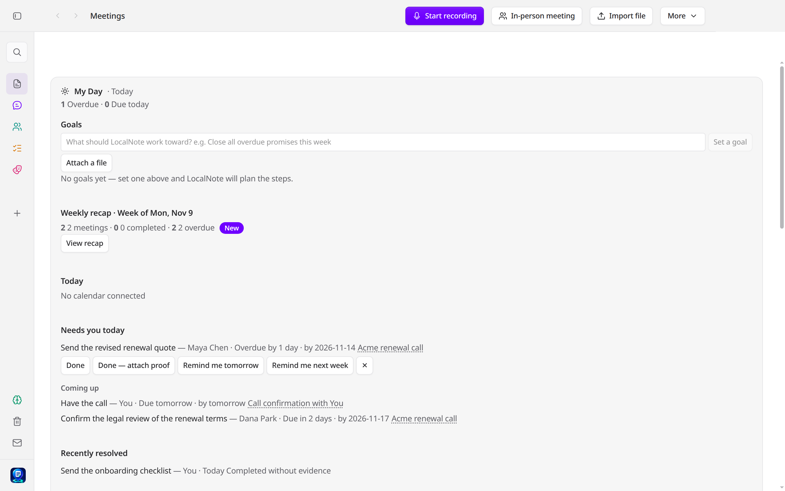
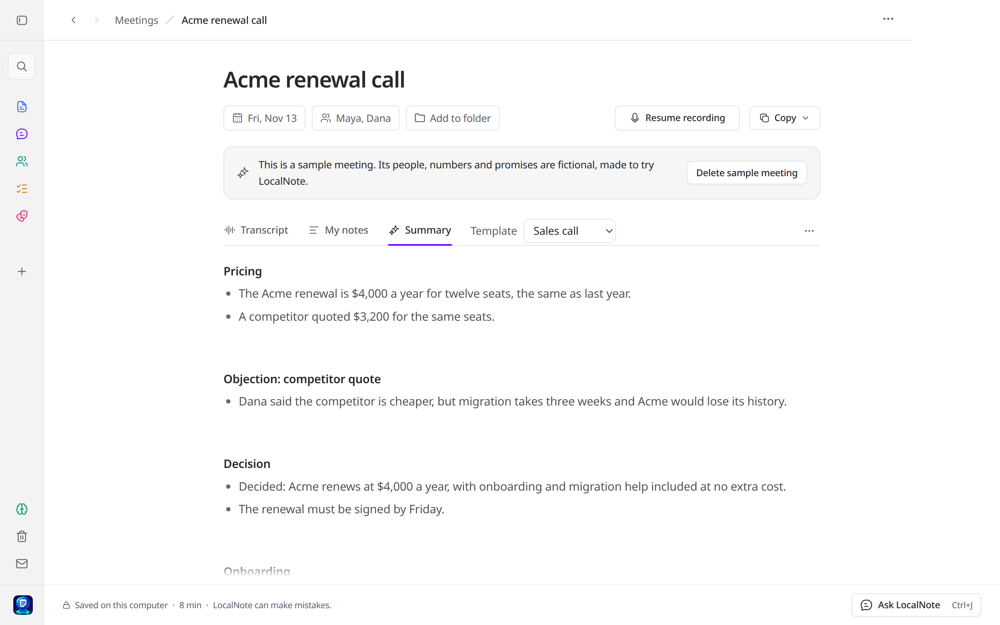

▣
The promise that evaporates.
Someone said “I’ll send it by Friday.” Nobody wrote it down. Friday comes and goes.
One private workflow that runs fully offline on your computer: prepare, capture, compare what changed, and create approved deliverables.
LocalNote is not another AI notetaker. Notetakers record the meeting. LocalNote finishes the work after it — the promises kept, the decisions proven, the extra work priced — and is learning to remove the work that shouldn’t exist at all.
LocalNote helps keep meetings, commitments, and decisions connected. Review source moments instead of trusting a summary without context.
After a meeting, it can prepare an updated brief and draft correspondence for your approval. No email is sent automatically.
Try the fictional sampleThis is the check LocalNote runs on its own summaries: every claim is matched against the transcript, and anything the meeting never backed is stamped UNCONFIRMED — in the open, never quietly dropped. It runs entirely in your browser, on a fictional example — your text never leaves the page.
Every meeting leaks value in the same three places. You have felt all three.
Someone said “I’ll send it by Friday.” Nobody wrote it down. Friday comes and goes.
The date was March 3. Then it was March 10. Nobody told the plan — or you.
“While you’re at it…” — an hour here, a day there, all of it free.
LocalNote catches all three — on your own computer, with the exact words as proof.
Fifteen of the things LocalNote does, in the order your day meets them — five before the meeting, five in it, five after it ends. The complete record — all seventy-eight — is on the product page.


Choose a step. This fictional, prewritten example shows the workflow without uploading a recording or requiring a login.
Below: Work Guardian checks the paper against the room · Agreements get decisions confirmed by the other side · Verified Execution lands approved work and reads it back · the Day Planner fits your promises around your calendar. Each is off until you switch it on in Settings.
A project lives in two places: the documents that were agreed, and the meetings where things actually get decided. Work Guardian is the part of LocalNote that keeps those two honest with each other.
Import the project's documents — the statement of work, the plan, the agreement — and mark which copy is the approved one. Every version is kept, and each new copy replaces the last without ever editing it. The approved copy is never changed in place, by you or by the app. And if a page has no readable text — a scan, a photo of a page — Guardian says so plainly instead of guessing.
Guardian reads what the documents promise and what your meetings decided — deliverables, dates, owners, amounts — and keeps the exact words behind every claim. A claim from a meeting is tied to that meeting; a claim from a document, to its place in the document. Nothing is blended together, and one project's records are never checked against another's.
Five kinds of drift get flagged: new scope that was never agreed, a date that conflicts, an owner that changed, work waiting on something late or unproven — and approval checks that end, in the app's own careful words, "Approval not found in selected records." It never claims an approval didn't happen; it tells you it isn't in the records you gave it. Flags land in My Day under Needs review — the top three up front, each quoting both sides word for word. You confirm, dismiss, or set each one aside; a decision stands until the facts change.
For a flag you confirm, Guardian drafts the fix: a clarification note, or a corrected file saved as a new file — never over the original. Your approval is tied to that exact file's contents; if the file changes after you approve, the write refuses and explains why. And every step is written into a completion ledger — Proposed, Prepared, Approved, Saved, Sent, Acknowledged — where a step the app verified itself (it read the file back) is labelled verified, and a step you marked yourself is labelled as yours. The two are never blurred.
Work Guardian is off until you switch it on in Settings. It works on the documents and meetings already in LocalNote, on your computer — nothing new leaves your machine.
A meeting can end with everyone nodding — and two different memories of what was decided. The Agreement Network turns the decisions into a small packet the other side answers, in writing, bound to the exact words.
LocalNote gathers one to five decisions from a meeting, each backed by the exact words that were said. Nothing inferred slips in quietly — a decision the record doesn't support has to be put right by you before the packet can be finished.
You hand the recipient a single packet file — by email, by chat, however you already reach them. There is no LocalNote server and nothing to log into. They answer with a response file: confirm, ask for a correction, dispute, or decline — decision by decision. They never install LocalNote and never create an account. A ready-made invitation draft is written for your own email app; LocalNote itself sends nothing.
Every answer is tied to that packet's version and its fingerprint. Edit the packet and it becomes a new version: earlier answers stay attached to the words they answered, as history — they are never silently carried onto new wording.
A packet proves the answer matches the exact words. It does not prove who answered — and it says so, on its face. Nothing here is called a legal signature, because it isn't one. What you get is a clean, checkable record of who was asked, what they were asked, and what came back.
The Agreement Network is off until you switch it on in Settings. And when a packet is confirmed, it can propose an update to the project's approved record through Work Guardian — the same approval-bound, hash-checked path as every other fix. Nothing updates itself.
Most writing doesn't happen in your notes. It happens in email, chat and documents — everywhere. The Writing Assistant meets you there: select, press a shortcut, rewrite, done.
Select text in any app on your Mac and press the shortcut (⌘⇧E — changeable in Settings). A small preview shows the original beside the rewrite: improve, shorten, expand, make it professional or friendly, translate it, or ask for anything in your own words — all with the model on your device.
Nothing changes until you press Replace — and Replace only fires if the selection is still exactly what it was. Afterwards, LocalNote reads the text back to check the change really landed; if it can't verify, it tells you plainly and offers Copy instead. Your clipboard is restored afterwards, too — a rewrite never eats what you copied earlier. Dictation got the same protection.
Password managers, banking apps and secure fields sit on a protected list — shown in Settings, where you can inspect it and add your own. In those places, the assistant refuses before a single character is read.
Writing sessions are remembered as counts — which app, which action, how much text — never the text itself. There is no history of your words to leak, because none is kept.
The Writing Assistant is Mac first, and off until you switch it on in Settings. It reads only the selection you point it at, only when you press the shortcut.
A promise without time in the day is just a hope. The Day Planner takes the commitments from your meetings and drafts focus blocks for them — fitted around the calendar you already keep, and never written anywhere until you approve them.
LocalNote looks at what you owe — the commitments with due dates from your meetings — and at the calendar already on your Mac, or a calendar file you import, and drafts blocks of protected time that fit around what is already there. The promise due soonest gets its time first; nothing is planned into time that isn't free.
The plan arrives as a proposal — in your morning queue, ready to review block by block. Your approval is tied to that exact set of blocks: change one, and it becomes a new proposal for you to approve. Nothing reaches your calendar before that, and a plan is never quietly applied in the background.
If no calendar can be read, the planner refuses and says why — it will not guess at your day. A calendar file that is days old is labelled stale on the plan itself, so you always know how much to trust what you are approving.
Until you approve, the blocks stay a proposal inside LocalNote — nothing is written to your calendar before that. The approved plan can be exported as a standard calendar file (.ics) and used wherever you like. There is no cloud calendar sync: LocalNote never reaches out to a remote calendar.
The Day Planner is off until you switch it on in Settings. Writing to a calendar is a Mac feature today; the plan itself only ever comes from a calendar LocalNote could actually read.
Decisions hide in email as much as in meetings. Bring an archive in — single messages or a whole mailbox file — and read, search and answer it with the same privacy as everything else in LocalNote: entirely offline.
Import single .eml messages or a full .mbox archive exported from any mail app. Threads are rebuilt from the replies themselves, not just matching subject lines, and a message you import twice is recognised and kept once.
Open a thread and read it plainly, or search the whole archive by what was actually written. Mail search is its own thing — words from your email never leak into your meeting results, or the other way round.
HTML mail is converted to plain text at the moment it is imported; scripts and markup are dropped, and links are shown as text. There are no remote images and no tracking pixels — nothing inside an imported email can run, load, or report back to anyone.
Write a reply inside LocalNote and export it as a standard email file, ready to send from your own mail app. LocalNote holds no mail account of yours, has nothing to sign in to, and sends nothing itself.
Email is off until you switch it on in Settings. This stage is import only — LocalNote does not connect to your mail account, and there is no account to connect.
“Prepared” is not “done”. When you approve a change, Verified Execution carries it into the destination file — then opens that file again and checks what actually landed.
Every action starts as a proposal: this content, into this file, for this reason. Your approval is bound to the exact content — change anything, and the approval no longer fits.
The write goes through the same guarded path as Guardian's fixes: the file's current state is checked first, the write is atomic, a backup is kept — and afterwards the destination is read again, independently, and compared with what was approved.
Verified: the read-back matches. Failed: it differs — and you're told. Uncertain: it couldn't be checked — and you're told that too, instead of a confident guess. The three are never blurred into one green tick, and every landing leaves a receipt.
If the destination file changed after you approved, the approval is invalidated and the action goes back for review. You can cancel any action, and an emergency stop halts everything — and a write that already landed is never pretended away; the record says what actually happened.
A project usually has a task file of its own — a CSV or JSON list the team keeps. Project Sync keeps it in step with the project's meetings: promises heard there are proposed into the file you choose, through the same approve-then-verify path as everything above.
A promise is proposed as an update only when it names a task exactly — a row LocalNote created earlier and marked as its own, or one single row that matches on title, owner and due date. “Similar” is never good enough: anything weaker becomes a short question — is this that task? — and only your answer links the two. A file whose rows carry no stable identity, or fields LocalNote doesn't manage, is left alone, with the reason stated.
LocalNote remembers which promise went to which row, so syncing again proposes nothing it already proposed. And every change still walks the same door: proposed, approved by you one by one, written, and read back — verified, failed, or uncertain, in plain words.
In this stage, destinations are your own local files and project files, on this computer. Verified Execution is off until you switch it on in Settings — and there is no approve-everything button, on purpose.
Every project leaks the same way: work gets asked for in a meeting, delivered in good faith, and never billed — because nobody wrote it down as a change. LocalNote writes it down, with the exact words attached.
For consultants, the expensive sentence in a meeting is “while you're at it…”. From a project's approved statement of work, the Revenue Pack proposes the rate card and the timesheet, waits for you to confirm both, and turns work outside the agreed scope into a change-order candidate with the arithmetic shown.
Rates are proposed from the approved SOW — never from a copy nobody approved — and time is proposed from your meetings. Neither counts until you confirm it. If a rate is unconfirmed or the time isn't, the candidate carries no total at all, rather than an estimate dressed up as one.
Amounts are worked out in exact whole-number arithmetic — no rounding drift, and totals are never mixed across currencies. Every candidate is labelled, in the app and in the pack: Not billable until approved. Approving one sends it through the same verified path as any other change: proposed, approved, written, read back.
The Revenue Pack runs under the Verified Execution switch — off until you switch it on in Settings. Its destinations are your own local files and project files, on this computer — and there is no approve-everything button, on purpose.
Buyers who sign off ask control questions, not feature questions. The five that matter, in Risk / Control / Evidence form:
Risk: “If this touches client work, what did it do, and when?”
Control: every outbound connection the app makes is logged on the machine, by day, host and category; the audit pack is exportable.
Evidence: “Don’t take our word for it — the connection log is yours, on your computer, and you can hand it to your own auditor.”
Risk: “Tools say ‘done’. How do I know it happened?”
Control: an approved change is written, then read back; the receipt says verified, failed, or uncertain — never “done” on the write’s own say-so, and a person’s attestation is labelled as attestation, kept apart from verified evidence.
Evidence: the completion ledger, per action.
Risk: “Where do our client conversations end up?”
Control: nowhere — processing happens on the machine the meeting happened on. For a client asking the question, that is an architectural fact, not a policy promise that can be revised next quarter.
Evidence: it runs in airplane mode; the connection log shows the silence.
Risk: vendor data-processing agreements, sub-processor lists, breach surface.
Control: LocalNote never receives your data, so there is no processing by us to contract over — no per-seat cloud agreement, no sub-processors, nothing of yours on our breach surface.
Evidence: the same log; here, the absence is the control.
Risk: implementation projects, integration risk, rollout cost quietly exceeding the licence.
Control: one download and a one-time model setup (~4.8 GB); the flagship modules are off by default and switched on one at a time; there is no integration project and no services engagement to buy.
Evidence: the download page’s four steps are the whole onboarding.
Everything a reviewer needs — data flow, model provenance, the exact encryption posture, the MCP boundary, consent mechanics — assembled on one page, checkable from the machine itself, without a sales call.
The short version is the rest of this page. This is the long version: every capability in the app, grouped the way pricing tables group them, with the plan each one belongs to. Buying information, not a sales pitch — check it the way you would check an invoice. Everything on this page runs on your device, fully offline — no cloud, no server, nothing of yours uploaded. The only download is the one-time model setup, before your first meeting. Free mode is permanent — your whole history stays readable, searchable and exportable forever; it caps new recordings at 3 meetings a month.
| What’s included | Free | Paid |
|---|---|---|
| Capture, transcription & live | ||
| Bot-free recording — no bot joins; it records from your device, offline | ✓Included | ✓Included |
| Offline transcription — words on your device, the language locked for the whole meeting | ✓Included | ✓Included |
| In-person mode — room recording through the same pipeline | ✓Included | ✓Included |
| Speaker diarization — who said what, labelled live and in the saved transcript | ✓Included | ✓Included |
| Transcript confidence + per-line edit — unsure words flagged; any line editable, the edit marked as yours | ✓Included | ✓Included |
| Zero-loss recording recovery — a crash or a dead battery loses nothing | ✓Included | ✓Included |
| Models on demand — the speech and notes models download only when first used; nothing heavy is bundled | ✓Included | ✓Included |
| Dictation (⌘⇧D) — speak into any app, anywhere | ✓Included | ✓Included |
| Voice inbox — quick spoken notes, captured and kept | ✓Included | ✓Included |
| Audio import — an existing recording imported and transcribed like a new one | ✓Included | ✓Included |
| Meeting-type note templates — the summary shaped by the kind of meeting | ✓Included | ✓Included |
| Live Assist — private hints during the meeting, from the live transcript | —Not included | ✓Included |
| Meeting detection — a “Take notes?” card when a call or a calendar event starts | ✓Included | ✓Included |
| Recipes — saved prompts run over your meetings — Prep my day and more | —Not included | ✓Included |
| DayDigest — “Prep my day” — today’s events, each with its brief built for it | —Not included | ✓Included |
| Sample meeting & first run — a full worked example is preloaded, so the first run shows the whole loop before you record anything of your own | ✓Included | ✓Included |
| Memory & follow-through | ||
| AI meeting notes & summary — every meeting becomes notes: the summary, the decisions and the action items, written on your device | ✓Included | ✓Included |
| My Day — today, what needs you, and what changed — one screen | ✓Included | ✓Included |
| Commitments Ledger — every promise a row, in its exact words, with owner and due date | ✓Included | ✓Included |
| Contradiction Detector — the record says so when a meeting contradicts it | —Not included | ✓Included |
| Intelligent Reminders — reminders derived from the ledger’s due dates | ✓Included | ✓Included |
| Follow-up drafts — a draft prepared from the meeting, waiting for your tap | —Not included | ✓Included |
| One-click resolution — a promise closed in one tap, with its proof attached | ✓Included | ✓Included |
| Evidence Timeline — the moments that bear on a promise, under the promise | ✓Included | ✓Included |
| Ask across meetings + Verified Answers — answers claim by claim, with citations — the cross-meeting AI | —Not included | ✓Included |
| Work Memory — the app’s accumulated memory of the work, on its own page | ✓Included | ✓Included |
| People View + person briefs — a page per person: past meetings, and what’s open | ✓Included | ✓Included |
| ⌘K offline search — search across every meeting, offline | ✓Included | ✓Included |
| Commitment Quiz — the app quizzes you on your own promises | —Not included | ✓Included |
| Slip Detector — a promise whose moment has passed is closed as slipped, with its evidence | —Not included | ✓Included |
| Contradiction Receipt — both sides of a contradiction, saved as a receipt, quotable later | —Not included | ✓Included |
| Documents & writing | ||
| Work Mode — proposals, scorecards and status documents made from meetings | —Not included | ✓Included |
| PDF export — a document or a note out as PDF | ✓Included | ✓Included |
| Copy / Markdown export — notes copied, or out as a Markdown file | ✓Included | ✓Included |
| Highlight clips — a short audio clip cut from the track at a highlight | ✓Included | ✓Included |
| Rehearsal mode — practise a hard conversation, walled off from the record | —Not included | ✓Included |
| Polish — rewrite a draft in place; the original stays until you accept | —Not included | ✓Included |
| Universal Writing Assistant (⌘⇧E) — rewrite text inside other apps, on-device — Mac first | —Not included | ✓Included |
| Ahead of you — the autonomous engine | ||
| Persistent jobs engine — background work survives restarts, runs exactly once, failures visible | —Not included | ✓Included |
| Auto-Brief — the brief prepared 15 minutes before the meeting | —Not included | ✓Included |
| Auto-Followup — follow-up drafts prepared and listed in the digest | —Not included | ✓Included |
| Auto-Backup — automatic backups, plus manual backup and restore | ✓Included | ✓Included |
| Auto-Diarization — speakers identified automatically once notes are ready | —Not included | ✓Included |
| Weekly Recap — the Sunday-evening recap of the week’s meetings | —Not included | ✓Included |
| Overdue Nudge — one digest line for a promise three or more days overdue | —Not included | ✓Included |
| The morning digest — one notification a day — counts only; the details live on My Day | —Not included | ✓Included |
| Setup notifications — a feature that ships off announces itself once, in the app | ✓Included | ✓Included |
| The Closer — the morning queue, with chase drafts for promises owed to you | —Not included | ✓Included |
| Goal Agent + deliverables — set a goal; a plan and deliverables prepared for your approval | —Not included | ✓Included |
| Assumption Sentinel — a pinned assumption checked against the record | —Not included | ✓Included |
| Border Guard — an outgoing draft checked before it can wait in the queue | —Not included | ✓Included |
| Checking & proof | ||
| No-Invention Lint — a summary line the record can’t back is stamped UNCONFIRMED, visibly | —Not included | ✓Included |
| Original-Quote Guard — a translation rides under the original words; the original is the evidence | —Not included | ✓Included |
| Translation — transcript and notes across English, Spanish and Hindi; the original always stays alongside | —Not included | ✓Included |
| Said vs Written — what was said against what the document says: agreed, contradicted, never mentioned | —Not included | ✓Included |
| Work Guardian — claims checked against the approved record; baselines never edited in place | —Not included | ✓Included |
| Verifiable Offline Proof + Audit Pack — a daily record of the app’s own internet use, exportable as an audit pack | ✓Included | ✓Included |
| Privacy Vault & controls — the consent log, encrypted and hash-chained; redaction on export; auto-delete | ✓Included | ✓Included |
| Workday systems | ||
| Day Planner — focus blocks proposed from your commitments and your real calendar | —Not included | ✓Included |
| Email archive — .eml and .mbox imported and searchable offline; nothing is sent | —Not included | ✓Included |
| Verified Execution kernel — approved work lands in its destination file — then is read back | —Not included | ✓Included |
| Project Sync — approved work reconciled into the project’s own task file, exact matches only | —Not included | ✓Included |
| Revenue Pack — a change order priced from the record — not billable until approved | —Not included | ✓Included |
| Profession Packs — a pack shapes the documents and checks for a profession | —Not included | ✓Included |
| Agreement packets — the exact words sent as one file; the other side confirms, corrects or disputes | —Not included | ✓Included |
| ProofDesk, TimeBack & the IEP Ledger | ||
| Cases & exhibits — a question becomes a case; exhibits kept in a content-addressed store | —Not included | ✓Included |
| Chronology, findings & reconciliation — claims cited; disagreements shown with both readings | —Not included | ✓Included |
| Case export + MCP case tools — the packet out — preview is the file, redaction on, approval bound to the digest | —Not included | ✓Included |
| Commitment Firewall — “Can I commit?” checked against the real load before you promise, working shown | —Not included | ✓Included |
| TimeBack Ledger — time given back, kept honestly — verified freed time apart from attested | —Not included | ✓Included |
| IEP Ledger — a school plan’s promised minutes against the minutes delivered, week by week | —Not included | ✓Included |
| Integrations & your other apps | ||
| Local MCP Server — your own AI apps read the record — per-client, read-only, scoped, audited | —Not included | ✓Included |
| Meeting folders + smart suggestions — meetings in folders; a suggestion is proposed, never filed on its own | ✓Included | ✓Included |
| Trash — deleted meetings can be restored or emptied for good, and expire on their own if left | ✓Included | ✓Included |
| Auto-update — the app updates itself; the restart happens when you say so | ✓Included | ✓Included |
| Teach-Once Glossary + vocabulary — teach a spelling once and it is fixed everywhere | ✓Included | ✓Included |
| Before-you-meet brief (Spear) — where you left off, what’s open, talking points | —Not included | ✓Included |
| FinalCheck | ||
| FinalCheck — outgoing drafts checked against your confirmed records; repairs approved one by one and read back | —Not included | ✓Included |
Free mode is what you keep if you never pay, or stop paying — the Free column is about making new work, not keeping old work. Paid removes the monthly recording cap and unlocks the full AI and the flagship modules. The first 30 days are the trial: everything, both columns, no card.
Your project runs on two things: the agreement on paper, and what gets said in meetings. When the two drift apart, you pay for the difference.
Work Guardian checks every meeting against the agreement you approved. New work that was never agreed shows up as a short review list — both sides quoted, word for word.
The ask from the meeting becomes a change order, worked out from your rate and your time — and it is not billable until you approve it.
Send the decision as a small packet; the client confirms the exact words. Later, “that’s not what I agreed” has an answer.
Do the arithmetic with your own numbers. The calculator below prices your unbilled extras, your meeting hours and your last “that’s not what I agreed” — from figures you type in, with every formula shown, and nothing you enter leaves this page.
Nothing is sent, written or billed without your tap. See how it works →
Computed only from the numbers you entered. LocalNote supplies no benchmarks, stores nothing, and this page makes no network requests — check the tab.
Some meetings decide things you will need to prove months later.
What the school promised, in minutes, against what was actually delivered — week by week, with an evidence pack you can hand over. A week with nothing recorded says “not recorded”. It never pretends to be zero.
Every claim in the debrief traces back to the exact words in the interview. If the record doesn’t back it, it is stamped UNCONFIRMED — in the open, never quietly dropped.
Pick the meetings, documents and emails that bear on a single question. ProofDesk lines them up in date order, shows where they conflict, and says plainly what the records you chose cannot establish. Then it prepares an evidence packet you can verify yourself.
In development now. It will appear here when it is real — not before.
Also in development: TimeBack — see the shortfall before you promise, and a ledger that only calls time “freed” when it is verified freed.
Where this is going: from notes, to proof, to less work. LocalNote began as notes that never leave your computer. It is becoming the record your work can stand on — and the tool that asks, before you promise, whether the work should exist at all.
Most apps ask you to trust their privacy policy. LocalNote is built so you don't have to — and so you can prove it to anyone who asks you where the data went.
No sign-up, no analytics, no tracking. There is no LocalNote server holding your meetings — because there is no LocalNote server.
After the one-time model download, turn off your Wi-Fi — or block LocalNote in your firewall. Recording, notes, search and briefs all keep working. The only optional connection is an update check, and Settings lets you switch that off. LocalNote also keeps a log of every connection it makes, right inside the app — and you can export it as an audit report whenever someone asks.
Meetings and notes sit in a folder on your computer, and you can export everything at any time. If LocalNote disappeared tomorrow, your data would still be on your machine — readable, exportable, yours.
Any notetaker can go offline this year. None of the cloud ones can show you the exact words, from audio they never kept, on a machine your record never left. That combination is the product.
LocalNote is in private testing, built by an independent developer. You won't find fake reviews or invented user numbers on this page — when the first real users speak, their words will appear here.
Granola, Otter and Fathom send your meetings to their cloud. NoteOwl keeps them on your device, like LocalNote. But notes were never the hard part. None of them prepare you before a meeting, track every promise until it's done — with the exact words attached as evidence — warn you when a decision changes, or prove that nothing left your computer. LocalNote appears in a notetaker table because meetings are where its work starts — what it is for is everything after.
| Granola | Otter | Fathom | NoteOwl | LocalNote | |
|---|---|---|---|---|---|
| A brief ready before your meeting | — | — | — | — | Yes |
| Promises tracked until they're done | In the notes only | Action items only | Action items only | A commitments board | Yes — with evidence and proof |
| Warns you when a decision changes | — | — | — | — | Yes |
| Checks project documents against your meetings, and proposes the fix | — | — | — | — | Yes — both sides quoted |
| Gets a decision confirmed by the other side — the answer bound to the exact words | — | — | — | — | Yes |
| Privacy you can verify — a log of every connection, plus an audit report | — | — | — | — | Yes |
| Consent log, redaction & retention controls | — | — | — | — | Yes |
| Ready-made packs for your profession | — | — | — | — | Yes |
| Rewrites selected text inside other apps, on-device | Dictation only | — | — | Dictation only | Yes — Mac first |
| Plans your day around your promises | — | — | — | — | Yes — proposed, you approve |
| Your email archive, searchable offline | — | — | — | — | Yes — import, on your computer |
| Lands approved work in your own files — and reads it back | — | — | — | — | Yes |
| Prices work outside the agreed scope — 'not billable until approved' | — | — | — | — | Yes |
| Where your meetings live | Their cloud | Their cloud | Their cloud | Your Mac | Your computer |
| Works on | Mac & Windows | Web & mobile | Mac & Windows | Mac only | Mac & Windows |
| Ask across all your meetings, with sources | Yes | Yes | Yes | Yes | Yes |
| Price | Free keeps 30 days of history, then $14/mo | Free keeps your 25 latest meetings, Pro $16.99/mo | Free — unlimited recordings, kept forever; Premium $20/mo | $79 once | 30 days free, then one simple paid plan |
Compared from each maker's public pages, November 2026. Granola, Otter, Fathom and NoteOwl are products of their respective owners; LocalNote is not affiliated with or endorsed by them.
You share the way you share a signed PDF: on purpose. Decisions go out as packets the other side confirms — no account, nothing installed, nothing uploaded. Documents, evidence packs and exports are files you send by whatever you already use. What LocalNote doesn’t have is a cloud workspace where your whole meeting history sits on a vendor’s server so a link can work. That absence is the product.
If free notes are what you need, take them — they’re good, and they’re genuinely free. Two things differ. Your Fathom record lives in Fathom’s cloud, made by a bot that joins your calls; your LocalNote record never leaves your computer, and no bot attends. And notes are where LocalNote starts: the promises ledger, the paper-vs-room check, the priced change order and the read-back receipt are the paid work. We don’t charge for remembering. We charge for what the remembering makes provable — and removable.
Not yet. LocalNote is a desktop product today; an iPhone app is in development and will arrive as the same product, not a thin clone. If your record has to start on a phone today, we’re not your tool yet — we’d rather tell you that here than sell you a promise.
Nothing. There are no LocalNote servers holding your record — your meetings, transcripts and history live in files on your computer, and the app keeps working without us. Free mode is permanent by design: your entire history stays readable, searchable and exportable forever, whether or not you ever pay, and whether or not we still exist. A cloud notetaker shutting down takes your history with it. LocalNote can’t — it never had it.
Local recording and AI inference for core workflows; selected integrations have explicit access controls.
Initial model downloads require internet. Connected AI clients may send approved retrieved content to their own services. Read our privacy design →
Meetings happen away from your desk. LocalNote for iPhone is in development — the same on-device assistant, launching together with the Mac app, and keeping in step with it directly over your own Wi-Fi, never through a cloud.
If your team needs one shared cloud workspace where everyone’s notes live together — this isn’t it, and it won’t be.
If you want a bot that joins calls so you don’t have to — LocalNote will never send one.
If your meeting record has to start on your phone today — our iPhone app is still in development.
If you want summaries you never have to check — every tool’s summaries need checking; ours just show you where they couldn’t prove a line.
LocalNote is for the person whose meetings make promises — to clients, to a school, to a team — and who has to keep them, price them, and prove them. If that’s your Tuesday, start the trial when it opens.

Built by Jatinder Pal Singh (JP) — ex-Apple · AI leader — because his own meetings kept leaking promises. His story ↓
Jatinder Pal Singh (JP)
Ex-Apple · AI leader
I'm JP, and I built LocalNote. I've spent my career building AI products and leading engineering teams — work where you sit in meetings all day. Which is exactly how this started.
One of my meetings got recorded by a cloud tool, and afterwards I had no way to check what it had kept, where it had gone, or who could listen to it. That bothered me enough to build my own. Not another recorder — I wanted the part after the meeting handled: what was promised, the follow-up, the document. Ready when the meeting ends, and nothing goes out without my approval. All of it on my own computer.
It's coming to phones next — the same LocalNote, in your pocket. You just talk to it. It records and transcribes on the phone itself, answers questions from your own meetings, and reminds you what you promised. And when your phone and computer are near each other, they sync directly, device to device. No cloud in between, ever.
No account. No server holding your meetings. Nobody listening in but you.
Join the waitlist - the first public release comes with a full 30-day free trial.